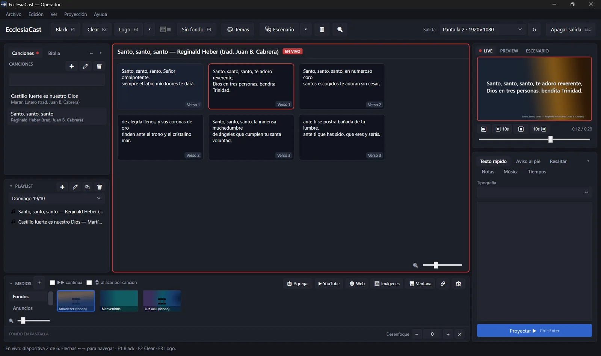
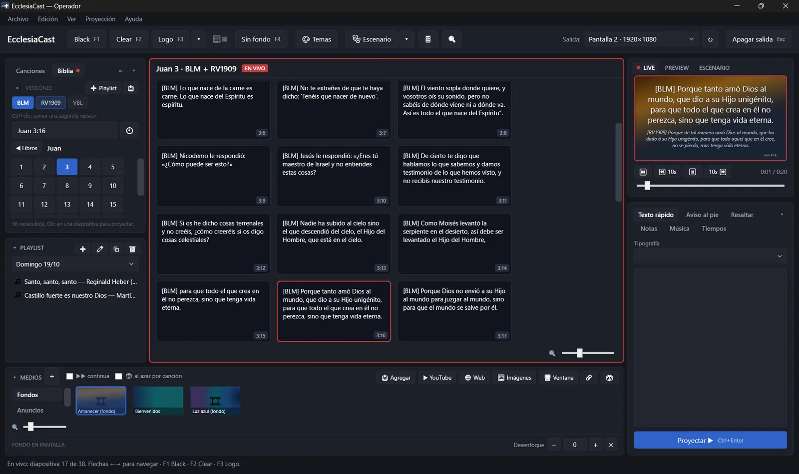
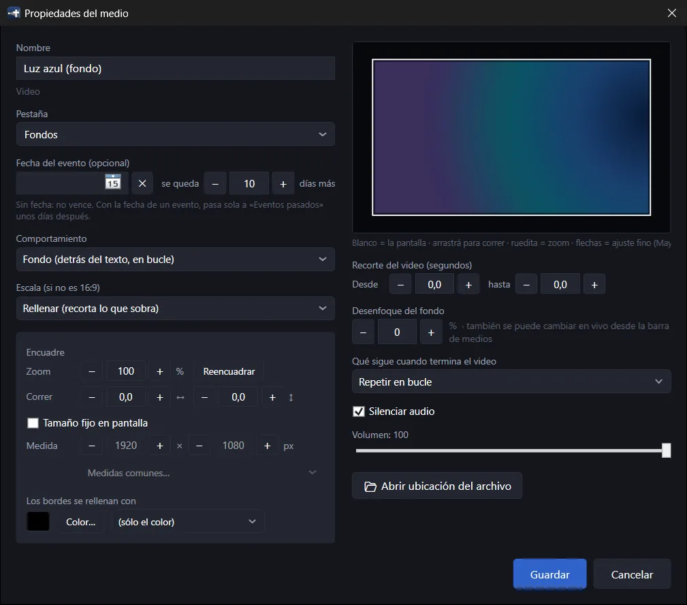
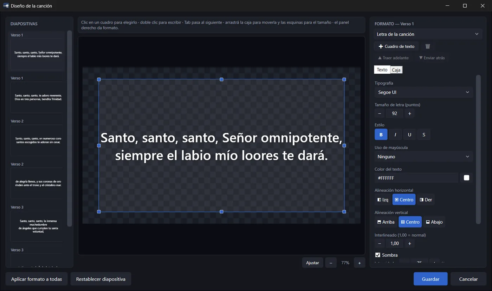
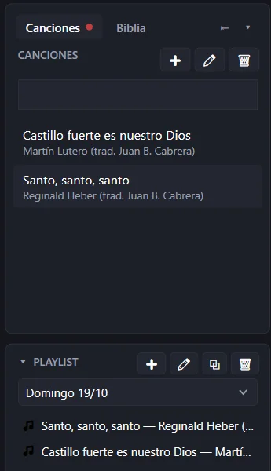
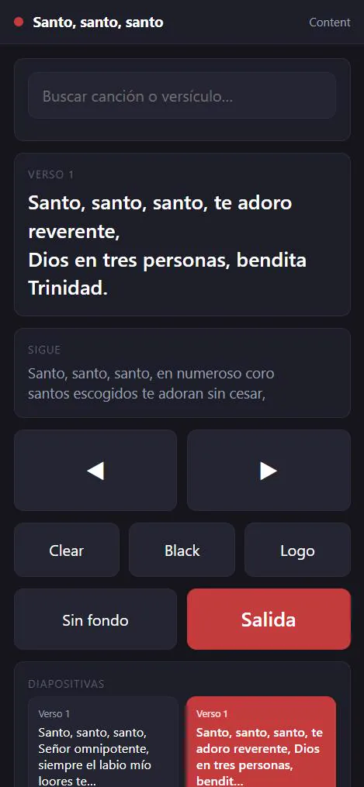
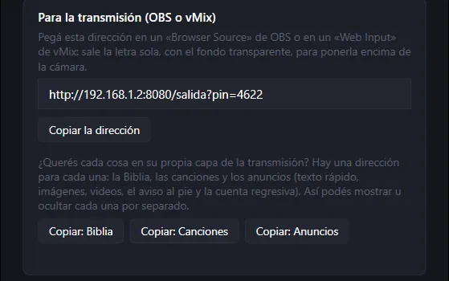
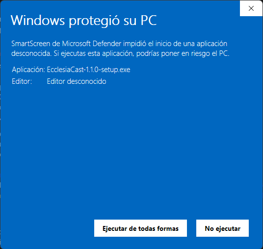

Las canciones y la Biblia,en un solo programa.Gratis.
EcclesiaCast es un programa para proyectar en la iglesia: la letra de las canciones, la Biblia en una o dos versiones a la vez, fondos con video y avisos. Es para Windows, está en castellano y es libre: no se paga nunca.
Son capturas reales del programa. Probá pasarlas con las flechas ←→ del teclado, como en un servicio.
Un solo programa
Muchas iglesias usan uno para las canciones y otro para la Biblia. EcclesiaCast hace las dos cosas, y también los fondos, los avisos y la playlist del culto.
Gratis de verdad
Sin licencias, sin suscripciones y sin versión «premium». Es software libre: el código está a la vista de todos.
Funciona sin internet
Todo lo que necesitás para el servicio anda sin conexión. Internet sólo hace falta para cosas como buscar una letra o poner un video de YouTube.
4
Biblias libres para elegir al instalar
2
versiones de la Biblia a la vez en pantalla
3
salidas: el proyector, los músicos y la transmisión
$0
para siempre, sin versión «premium»
Miralo en acción
Cuarenta segundos del programa: una canción, un pasaje en dos versiones, un cambio de fondo y el control desde el celular. El video no tiene sonido.
Todo lo que necesitás para el domingo

S.01 Canciones
Canciones
Pegá la letra y cada párrafo es una diapositiva. Buscá por título, artista o una frase de la letra. Si venís de ProPresenter, EcclesiaCast trae todas tus canciones de una vez. También podés buscar una letra en internet y traerla ya separada.

S.02 Biblia
La Biblia, en una o dos versiones
Escribí Juan 3:16 o sal 23 y listo. Con Ctrl+clic sumás una segunda versión, que se proyecta debajo de la primera. Las flechas recorren la Biblia entera, de capítulo en capítulo y de libro en libro.

S.03 Fondos
Fondos con imágenes y video
Poné un video en bucle detrás de la letra: cambiar de verso no lo reinicia. Desenfocalo para que la letra se lea mejor. También proyecta PDF y presentaciones de PowerPoint, página por página.

S.04 Estilo
Tu estilo
Elegí la letra, el tamaño, los colores, la sombra y el contorno. Si un versículo no entra, se achica solo. Cada canción puede tener su propio diseño.

S.05 Playlist
La playlist del culto
Armá el orden del servicio con canciones, pasajes y medios, y manejalo entero con las flechas del teclado. ¿El domingo se parece al anterior? Duplicá la playlist y cambiá lo que haga falta.
S.06 Músicos
Pantalla para los músicos
Un tercer monitor de cara a la plataforma: la letra en grande, la que sigue, la hora, el cronómetro y notas que sólo ven ellos. Aunque la congregación tenga la pantalla en negro, los músicos siguen viendo la letra.

S.07 Celular
Manejalo desde el celular
Escaneá un código QR, poné el PIN y pasá las diapositivas desde el celular, con la misma wifi de la iglesia. No hace falta instalar nada en el teléfono.

S.08 Transmisión Nuevo
Para la transmisión
Copiá una dirección y pegala en OBS o vMix: la letra aparece sola, con fondo transparente, lista para ir encima de la cámara. Sin placa capturadora ni otra computadora.
Y todo lo demás
04:59
Cuenta regresiva
Un reloj en pantalla antes de empezar el servicio.
Antes, la verdad: el instalador todavía no está firmado digitalmente. La firma es un certificado que le dice a Windows quién hizo el programa; cuesta dinero y todavía no la tenemos. Sin ella, Windows muestra un aviso la primera vez: no dice que el programa haga daño, dice que todavía no sabe quién lo hizo.
Tocá «Más información» y después «Ejecutar de todas formas»
«Más información» es el enlace subrayado debajo del texto. Al tocarlo aparece el nombre del archivo y el botón «Ejecutar de todas formas».

Seguí el instalador
Te deja elegir qué Biblias libres instalar y si tu computadora es modesta (modo de bajo rendimiento).
Listo
Abrí EcclesiaCast, elegí la pantalla del proyector arriba a la derecha y tocá «Poner en vivo».
¿Querés comprobar que el archivo es el original?
Cada instalador tiene una «huella» (un código SHA-256) que cambia si alguien toca aunque sea una letra del archivo. La del instalador de esta página es:
Para ver la del archivo que bajaste: abrí la carpeta Descargas, hacé clic derecho en un lugar vacío → Abrir en Terminal, escribí Get-FileHash .\EcclesiaCast* y apretá Enter. Si los dos códigos son iguales, el archivo es el que publicamos. El instalador lo arma GitHub a partir del código público, no una computadora particular.
Qué computadora hace falta
Parte
Mínimo
Recomendado
Sistema
Windows 10 (versión 1903 o más nueva) u 11, de 64 bits
Windows 11
Procesador
4 núcleos (Intel Core i3 de 8.ª generación o AMD Ryzen 3)
Intel Core i5 o AMD Ryzen 5 de los últimos años
Memoria
8 GB
16 GB
Disco
1 GB libre
Disco SSD
Pantallas
Una salida de video (HDMI) para el proyector o el televisor
Dos salidas, si querés la pantalla de los músicos
Lo probamos en: la PC de la iglesia (Intel Core i5-10400F, 16 GB, placa de video NVIDIA RTX 3050) y una notebook Lenovo Slim 5 16 (AMD Ryzen AI 7 350, 16 GB, disco SSD).
El mínimo es una estimación: todavía no lo probamos en una computadora justa. Si la tuya es vieja, prendé el modo de PC de bajo rendimiento (Ver → Modo PC de bajo rendimiento) y contanos cómo anda.
Preguntas frecuentes
¿Cuesta algo? ¿Hay una versión paga?
No y no. Es gratis para siempre. La licencia (GPL-3.0) además impide que alguien lo cierre y lo venda.
¿Funciona sin internet?
Sí. Canciones, Biblias, fondos, la pantalla de los músicos y el control desde el celular (con la wifi de la iglesia, aunque no tenga internet) andan sin conexión. Internet hace falta sólo para buscar letras, poner videos de YouTube o abrir páginas web, y una vez por día el programa se fija si hay una versión nueva.
¿Qué Biblias trae?
Cuatro libres: Reina-Valera 1909, Biblia Libre para el Mundo, Versión Biblia Libre y Palabra de Dios para ti. Elegís cuáles al instalar.
¿Y la Reina-Valera 1960 o la NVI?
Tienen derechos de autor y no las podemos repartir. Si tenés el archivo, la importás (en JSON o Zefania XML); el programa trae una ayuda que explica cómo preparar una Biblia para importar.
¿Puedo traer mis canciones de ProPresenter?
Sí, los archivos de ProPresenter 7 (.pro) y de texto (.txt). Busca solo dónde están.
¿Sirve para la transmisión en vivo?
Sí: da una dirección para OBS o vMix con la letra sobre fondo transparente.
¿Funciona en Mac o en Linux?
No, sólo en Windows.
¿Mis datos van a algún lado?
No, salvo que vos lo decidas. No hay cuentas ni estadísticas: todo queda en tu computadora. Lo único que sale es un comentario cuando tocás «Enviar» en la ventana de comentarios, y podés ver antes qué lleva. Política de privacidad →
Un proyecto nuevo, hecho en una iglesia
EcclesiaCast nació en la Iglesia Pan de Vida (Iglesia de Dios Misiones Mundiales), en Montevideo, para resolver lo que necesitábamos cada domingo. Hoy es la única iglesia que lo usa. Si lo probás en la tuya, nos encantaría saber cómo te fue.
¿Por qué es gratis?
Porque creemos que ninguna iglesia tendría que pagar para proyectar la letra de un canto. EcclesiaCast es software libre (licencia GPL-3.0): cualquiera puede usarlo, copiarlo, regalarlo y mejorarlo, y nadie puede cerrarlo para venderlo.
Cómo ayudar
¿Encontraste una falla o tenés una idea? Contala en GitHub: queda a la vista de todos y otra iglesia con el mismo problema la encuentra. Hace falta una cuenta de GitHub, que es gratis.